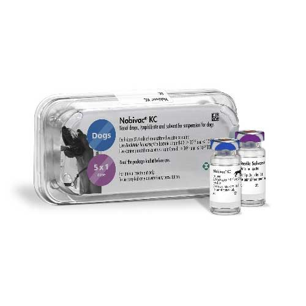

واکسن Kennel Cough داخل بینی سگ، شرکت MSD هلند
📝ترکیب واکسن:
هر دز واکسن حاوی باکتری Bordetella bronchiseptica سویه B-C2 با
108-109.7CFU
📝و ویروس Canine Parainfluenza سویه Cornell با
103-105.8TCID50
📝شکل و نوع واکسن:
واکسن لیوفیلیزه زنده تخفیف حدت یافته
📝موارد مصرف:
واکسن داخل بینی جهت ایمن سازی فعال علیه بیماری تنفسی عفونی ناشی از باکتریB. Bronchiseptica و ویروسparainfluenza در سگ ها
📝دز و نحوه مصرف:
ابتدا یک دز واکسن را با 1 ویال حلال مخصوص Nobivac KC (یا آب مقطر) به خوبی حل کرده و سپس کل محلول آماده شده (0/4 میلی لیتر) را با سرنگ استریل 1 میلی لیتری کشیده، سر حیوان رو به بالا ثابت نگه داشته و سر سوزن سرنگ را جدا کرده، کل محلول (0/4 میلی لیتری) را در یک سوراخ بینی سگ خالی کنید. واکسن آماده شده را ظرف مدت 1 ساعت مصرف نمایید. توصیه میشود نوبت اول تجویز واکسن در سن 2هفتگی باشد. متعاقب مصرف این واکسن طی 72 ساعت ایمنی بر علیه B. bronchiseptica و 3 هفته بعد بر علیه canine parainfluenza ایجاد می شود. مدت ایمنی 1 سال میباشد بنابراین باید سالیانه تکرار شود.
📝توصیه ها و احتیاطات لازم:
دقت کنید واکسن از شبکه توزیع رسمی تهیه شده باشد.
واکسن باید طبق نظر دامپزشک مصرف شود.
با هیچ گونه واکسن زنده و یا محصولات ایمونولوژیکی مخلوط نگردد.
دور از دسترس کودکان، حیوانات و افراد بی اطلاع نگهداری شود .
در صورت ورود اشتباه سرنگ به فرد تزریق کننده سریعا محل را با آب شست و شو داده و اگر علائم خاصی بروز کرد به پزشک مراجعه شود.
📝موارد منع مصرف:
از واکسیناسیون سگ های بیمار خودداری شود. به هیچ عنوان همزمان با سایر درمان های داخل بینی یا در طول درمان آنتی بیوتیکی استفاده نگردد.
📝عوارض جانبی:
در توله سگ های خیلی جوان، ترشحات خفیف چشم و بینی ممکن است یک روز پس از واکسیناسیون رخ دهد. گاهی اوقات این ترشحات همراه با عطسه و سرفه هستند. علائم معمولا گذرا بوده اما به ندرت تا 4 هفته ادامه پیدا میکنند. در حیواناتی که علائم شدیدتری دارند ممکن است نیاز به درمان آنتی بیوتیکی باشد.
📝اطلاعات بیشتر:
حیوانات واکسینه شده به مدت 6 هفته بعد از واکسیناسیون، سویه واکسینال B. bronchiseptica و به مدت چند روز بعد از واکسیناسیون، سویه واکسینال canine parainfluenza را در محیط پخش میکنند. بنابراین حیوانات واکسینه به مدت 6 هفته در مجاورت حیواناتی که نقص ایمنی دارند نگهداری نشوند.
📝شرایط نگهداری:
واکسن و حلال Nobivac KC در دمای ٢ تا ٨ درجه سانتی گراد و دور از نور حمل و نگهداری شود. قبل از استفاده حلال واکسن باید به دمای محیط برسد.
📝مدت نگهداری:
عمر قفسه ای: 27ماه
زمان مناسب مصرف پس از آماده سازی واکسن: 1 ساعت
📝محصول شرکت:
MSD هلند
کاتالوگ محصول